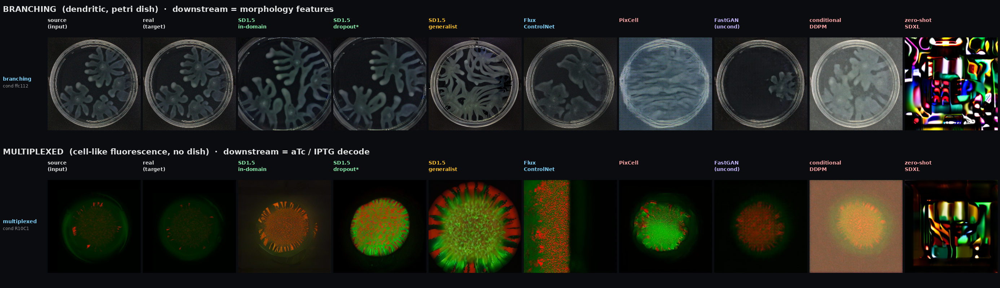

Backbone × Dataset matrix
Every generative model we tried (columns) against every dataset we tried it on (rows), aligned to the same source condition so you can compare like-for-like. "Not tried" = that backbone was never run on that dataset.
2026-10-11 · one representative condition per row (branching ffc112, multiplexed R10C1) · see per-condition drill-downs below · ← full project story

The numbers behind each column
| Model | What it is | Branching CMMD ↓ | Multiplexed CMMD ↓ | Verdict |
|---|---|---|---|---|
| SD1.5 — in-domain | fine-tuned ControlNet on this domain | 3.38 | 12.6 | the reliable workhorse; wins branching |
| SD1.5 — dropout* | + conditioning-dropout training | 3.20 | 7.97 | the win beats rotation on shape_factor |
| SD1.5 — generalist | trained out-of-domain, applied here | ~8.8 (OOD) | — | washed / over-saturated; the old confound |
| Flux — bf16 + CN6 | 12B flow-matching, fully escalated | 4.84 | 7.71 | realism plateaus ~0.50; never catches SD1.5 |
| PixCell | cell-microscopy DiT (frozen prior) | ~49.8 washed | 5.78 | wins multiplexed, useless on branching |
| FastGAN | low-data GAN, unconditional | 15.4 | 8.46 | undertrained + unconditional; not a usable augmenter |
| conditional DDPM | from-scratch Palette-style, 6-ch | 9.81 | 19.71 | learns structure, can't texture → blurry |
| zero-shot SDXL | general prior, no training (img2img) | 71.0 | 42.99 | hallucinated; ~20× worse than in-domain |
CMMD = distribution-level CLIP distance, lower = better; all scored identically vs held-out real replicates. *On multiplexed, dropout CMMD 7.97 beats in-domain SD1.5 (12.6) with the best realism (0.335); the downstream aTc-decode win was measured on the in-domain SD1.5 augmenter. Branching/multiplexed Flux used different configs (bf16+CN6 vs fp8/CN4). Also attempted, no usable samples to show: StyleGAN2-ADA (CUDA-op build failures), SD3.5-ControlNet (diffusers env dead-ends).
Drill-down — more conditions per dataset
The matrix above shows one condition per row. These are the original per-domain montages with four conditions each, so you can see the pattern holds across colonies (not cherry-picked — conditions are evenly spaced across the sorted held-out set).